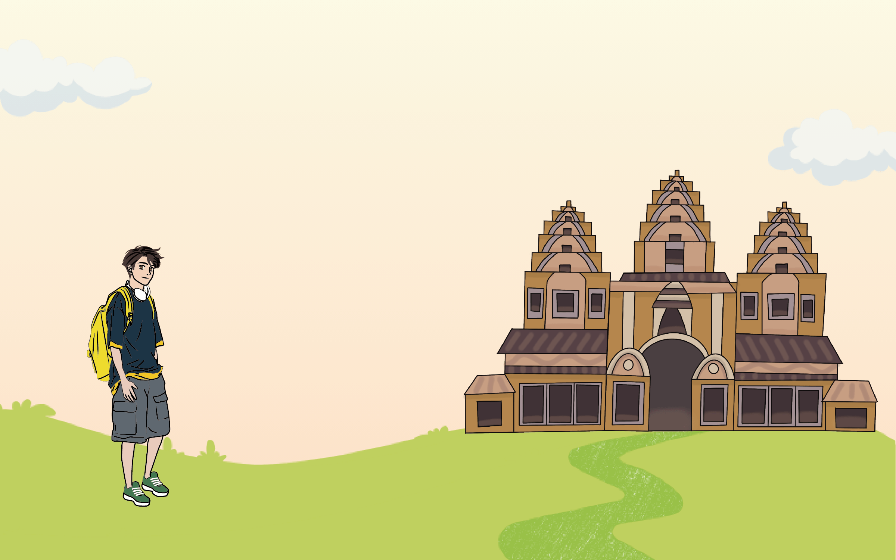
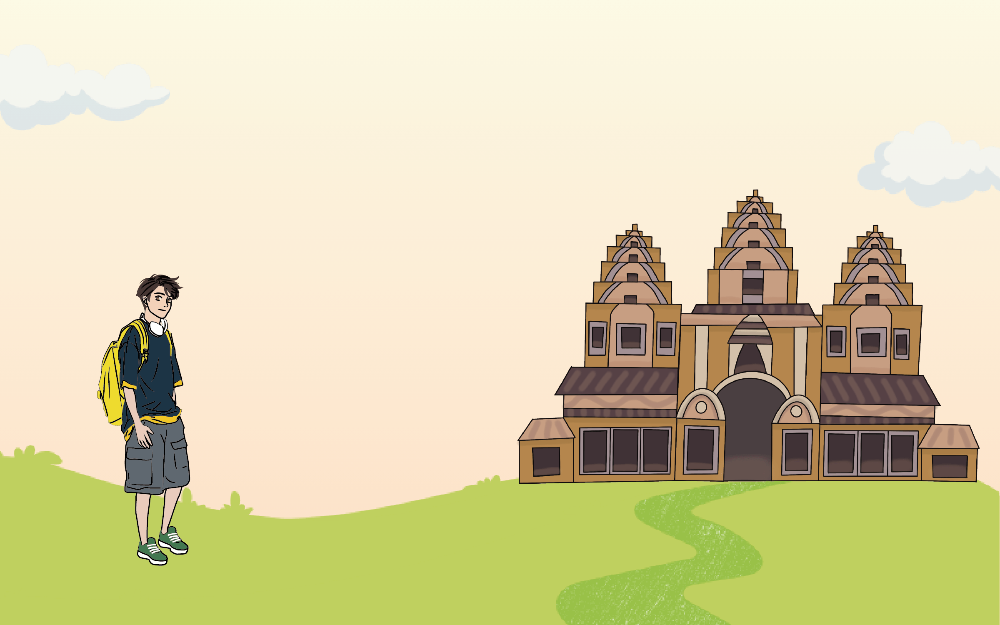
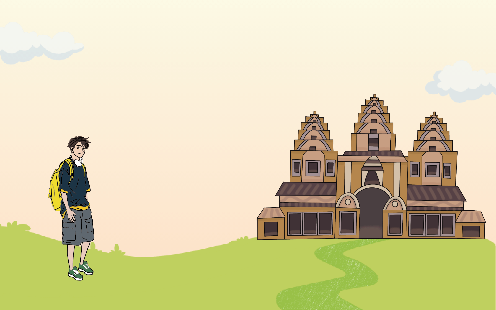
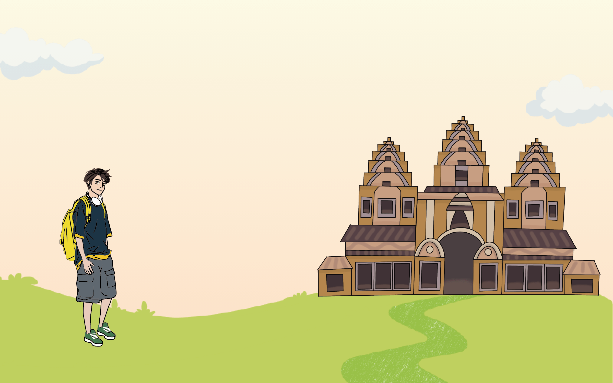

柬埔寨Cambodia
 



參考網站
這是我們的資料來源（可以自行複製下列網址查看喔）
習俗文化
飲食文化
柬埔寨飲食介紹：
https://crossing.cw.com.tw/article/18100
https://al10121216.pixnet.net/blog/post/371302042
阿莫克魚：
https://www.joyinkitchen.com/article/268
柬式火鍋介紹：
https://www.mr-angkor.com/%E6%9F%AC%E5%BC%8F%E7%81%AB%E9%8D%8B/
柬式米粉介紹：
https://nit.immigration.gov.tw/Multicultural/Detail/98a0a547-483b-49fb-8ed0-28ba875f13b1
特殊節日
柬埔寨特殊節日介紹：
https://kknews.cc/zh-tw/travel/qvex2g.html
送水節：
https://kknews.cc/zh-tw/world/ljereg9.html
建築特色
建築介紹
柬埔寨建築介紹：
https://opinion.cw.com.tw/blog/profile/52/article/1831
吳哥窟：
https://www.mr-angkor.com/intro_angkor/
金邊大皇宮：
https://udn.com/umedia/story/12774/6574478
圖片來源
以下是圖片連結，皆是創用CC授權或組員親自拍攝
習俗文化
飲食文化
阿莫克魚：
https://live.staticflickr.com/8258/8666848836_3d2fd151f9_b.jpg
柬埔寨酸湯：
https://live.staticflickr.com/7052/6967077062_04a400c20d_b.jpg
火湖烤魚：
https://www.xuehua.us/wp-content/uploads/2018/03/a8d9d2b057764f2aac829322fe5b6e93.jpg
柬式火鍋：
https://scontent.ftpe7-1.fna.fbcdn.net/v/t1.18169-9/1798592_720065444680386_23762379_n.jpg?_nc_cat=106&ccb=1-7&_nc_sid=0225a7&_nc_ohc=-_wehqTxqB4AX_sxfYD&_nc_ht=scontent.ftpe7-1.fna&oh=00_AfB65rv9zLJtmzqwKwmlEVuoS9uAFrL_eZbSLn3OxwT0XQ&oe=65AA0A77
米粉：
https://live.staticflickr.com/65535/49544655446_22f067e26f_b.jpg
特殊節日
柬埔寨特殊節日介紹：
https://live.staticflickr.com/6089/6153440513_899ae2bd54_b.jpg
送水節：
https://upload.wikimedia.org/wikipedia/commons/e/e3/Boat_Racing_Bon_Om_Touk.jpg
御耕節：
https://upload.wikimedia.org/wikipedia/commons/8/8e/Royal_ploughing_ceremony_day_5.jpg
建築特色
建築圖片
吳哥窟：
https://upload.wikimedia.org/wikipedia/commons/8/82/Cambodia_2638B_-_Angkor_Wat.jpg
金邊大皇宮：
https://storage.needpix.com/rsynced_images/royal-palaces-1947152_1280.jpg
銀閣寺：
https://reurl.cc/G4rpdW
中央市場：
https://live.staticflickr.com/280/19191418290_cd61097644_b.jpg
 參考網站
參考網站